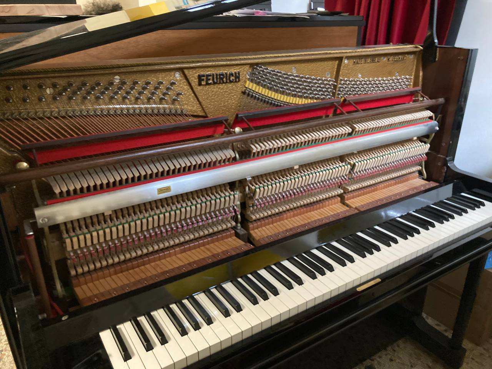
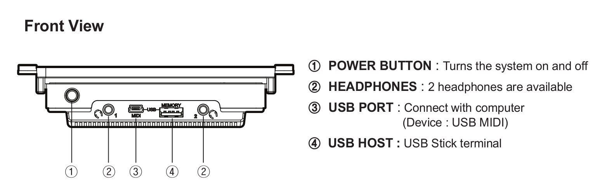
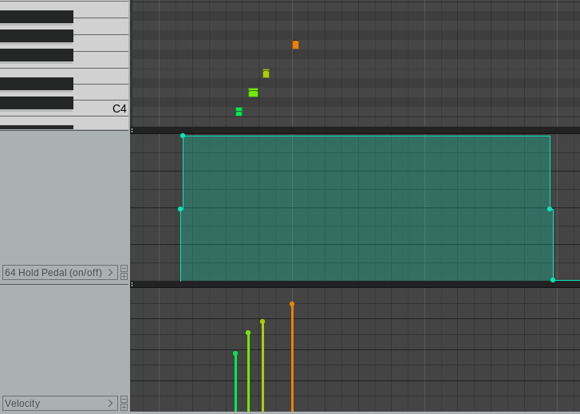
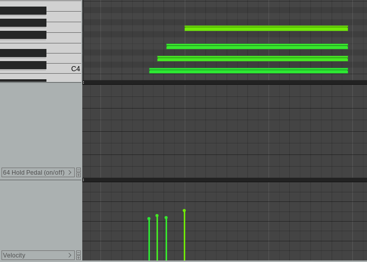
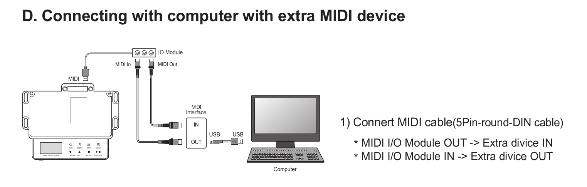
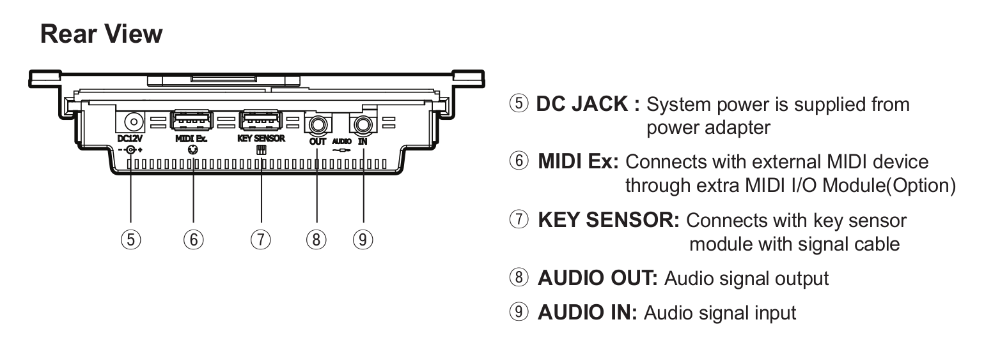
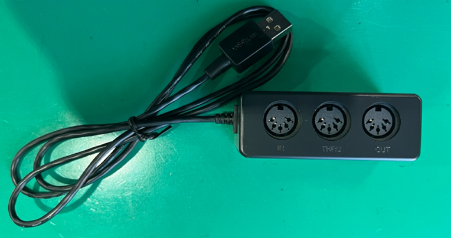
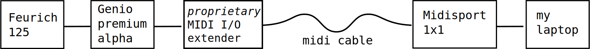

On how, after several attempts, I finally managed to get my acoustic piano to communicate with my laptop in MIDI.
When I was younger, I used to spend a lot of time on the piano. In my room, next to my desk, there was an acoustic, upright piano that my parents had bought so that my siblings and I could practise music.
It was nice to have it so close at hand: all I had to do was turn my chair around and immediately I could hear the sound. If I got an idea, I could immediately try it out with great immediacy (here on the right is a photo of my old piano, dated October 2002).
Since I started living on my own I no longer had my piano with me although I continued, at least for the first few years, to practise on some digital keyboard.
Playing an acoustic piano is not remotely comparable to playing a digital keyboard. It's not just a matter of sound (that of an acoustic piano is warm, wide and enveloping while I find that of a digital keyboard thin and one-dimensional) or of tactile/mechanical feel of touch (although there are digital keyboards that have beautiful weighted mechanics that are really very convincing) but it's also a matter of practicality and immediacy.
I consider myself a rather patient person but for certain things I think I have become rather intolerant. If I feel the need to play I have to be able to do it immediately, I don't want my enthusiasm to cool down with wasted time such as plugging the keyboard into the power socket, looking for where I put my headphones, connecting them to the instrument, taking care to arrange the cable correctly so that I don't trip over it and get it ‘in the way’ while playing.
Now that I'm writing this article, they really seem like minor things, but if repeated over and over again, they end up becoming a nuisance and ‘getting in the way’ of the playing experience itself. In the long run, they end up making sad even those few moments on the instrument that should instead be relaxing and liberating.
That is also why a few months ago my wife and I decided to buy an acoustic piano for our house (upright of course because the space is not that big).
It was a while before we decided but, little by little, we became fond of the idea of:
After various searches, we fell in love with a Feurich 125 piano that we found by chance at a tuner/repair shop out of town. It is a beautiful piano built in 1983 in West Germany and has, among other special features, a Renner[1] mechanism and a soundboard made of spruce by the Ciresa company[2].
The piano has two pedals. The right one is for the ‘forte/resonance’. The left one is for the ‘one-string’ effect which in our piano is implemented in the form of bringing the hammers closer to the strings.
In addition to these two pedals, the piano has a lateral lever which acts as a sordina pedal which, when activated, causes a felt cloth to descend, placing itself between the hammers and the strings: an exquisitely muffled and evocative sound is thus obtained.
On closer inspection, both the left pedal and the sordina lever can be considered sound silencing systems, them are mechanical silencing systems, invented for both expressive and practical purposes.
I mention this because, when we made the purchase, we requested the installation of an additional, more modern silencing system — an electromechanical one. This system, through the use of sensors and electronic components, would allow us to play the piano with headphones, without the instrument producing any audible sound in the surrounding environment.
These moderns type of silencing systems are primarily designed to allow studying and practising the piano without disturbing tenants or neighbours. The presence of sensors in tandem with the activation of a mechanical system that interrupts the stroke of the hammers just before they hit the strings, makes the piano totally silent and at the same time usable through a pair of headphones.
Our request wasn't primarily to prevent any potential disturbance the instrument's sound might cause our neighbors, but rather to implement a system that could convert the pressure applied to the keys and pedals into digital signals. This would have opened up opportunities for various forms of experimentation and, most importantly, allowed us to record our performances in MIDI format, to be later processed in a DAW maybe.
From my experience, Yamaha or Kaway pianos, for example, can be purchased with a ‘factory’ silencing system, but it is also possible to install a silencing system from scratch even on pianos that did not originally have one - like in our case (the installation work is not particularly invasive).
There are at least two silencing kits of this kind: one is adsilent, made in Germany, and the other is Genio, from the Korean company URSlab. The system installed on our Feurich is a Genio Premium alpha, and it works quite well!
As I said, if one of the goals was precisely to record musical performances via MIDI on the PC, I needed to figure out how to connect the Genio to my workstation. Below is the configuration of our home studio.
The first issue that arises is that my usual workstation is situated quite far from the instrument. One possible solution would have been to rearrange the furniture in the room to position the desk closer to the piano. While we considered this option, we ultimately dismissed it, as we are very fond of the current setup and have no desire to change it at this time!
The problem of the connection between the piano and the laptop has not yet been resolved and we must therefore consider other options such as:

A USB cable would have been the ideal solution, and while this connection functions well with shorter cable lengths, it wouldn't have been as effective for our situation. The cable would need to stretch over 5 meters, which would lead to a degradation of the digital signal.
Another option could be to make the recordings on a device connected to the Genio (such as a USB stick to be connected to the USB port named memory, in the picture with the number 4). The USB stick can be used to ferry these recordings from the Genio to the PC from time to time.
While intriguing, despite the deferral between performance and replay of the same on the PC, even this strategy proved also impractical due to what appears to be a curious flaw in the Genio's firmware.
Basically, and this has not been denied to me by the USRlab company's official support after I had emailed them about it, the firmware is not capable of recording CC-type events.
For example, the operation of the forte pedal is not recorded with control continuous, rather it is translated as note-off events on the notes that were sustained.
In these two pictures, the difference between the two cases is clearly visible (screenshots are taken from Reaper DAW):
| Recording via USB cable | Recording on USB stick |
|---|---|
|  |  |
| Sustain pedal operation is correctly registered via CC messages | The MIDI file that the Genio firmware saves on the USB device does not contain any information about continuous controls. The operation of the forte pedal is not recorded. Rather, when the pedal is released, this event is ‘simulated’ by writing note-off messages. |
As you can see, this system is heavily flawed and practically unusable. I asked about a possible firmware update for the Genio but have not received a reply in this regard.
Also, on a side note, I noticed that some of my USB sticks did not work properly with the Genio: the latter does not recognise them as devices to which it is possible to copy MIDI from the internal memory nor from which any MIDI data can be played.
At this point, the last resort was to use a MIDI cable to connect the Genio to the PC. The MIDI cable is theoretically not subject to excessive signal degradation over long distances, unlike the USB cable.
To implement this strategy, it was necessary to have a physical 5-pin DIN[4] interface on both the Genio system and my PC. This was the opportunity for me, rummaging through some of the technology boxes I have around the house, to exhume an old M-Audio Midisport 1x1 interface (you can see it from this connection diagram taken from the m-audio website).
I don't remember how I came into possession of it, the fact is that I've never managed to use it: when I bought it I couldn't find the drivers for my Ubuntu Studio operating system and so it sat in a box for a long time.
Years later, on the occasion of these experiments, to my surprise, I found an installer on Muon (the package manager of Ubuntu Studio 22.04 operating system I'm using) that fit the bill and in no time at all the old Midisport magically came back to life: I was finally able to send and receive MIDI signals from my PC via the standard 5-pin DIN connector!
On the PC side then everything seemed to be solved, the problem of the Genio remained. Reading the manual I came across these illustration:
 So, as a test, I immediately try to connect the Midisport to the MIDI ex port of the Genio also because on closer inspection, it appears that the connection interface is in the form of a USB-A connector (in the picture numbered as 6) but I realise that, from the activity of the the Midisport's LEDs, no MIDI signal is sent from the Genio to the MIDI out port of the Midisport.
I wrote a second e-mail to USRlab's official support querying them about the matter and the support explains to me that the MIDI ex port of the Genio is designed to interface exclusively with a proprietary I/O MIDI device and, therefore, is not compatible with other types of interfaces.
After a few more mails that lead me to contact first the official importer of the Genio systems in Italy and then again my tuner, I finally manage to get hold of the misterious Genio proprietary MIDI I/O expansion system: nothing more than a small plastic box equipped with three 5-pin DIN connectors and a USB-A cable.
The purchase of a sufficiently long MIDI cable (10 metres in my case) finally allowed me to close the circle and successfully connect the piano to the PC.
After initial tests, it seems that this last route is proving successful. I will keep an eye on it in the future and hope not to run into any more strange malfunctions.
| ^ | [1] | Renner piano mechanics |
| ^ | [2] | Ciresa soundboards |
| ^ | [3] | GENIO premium alpha user manual |
| ^ | [4] | 5-pin DIN MIDI connections |